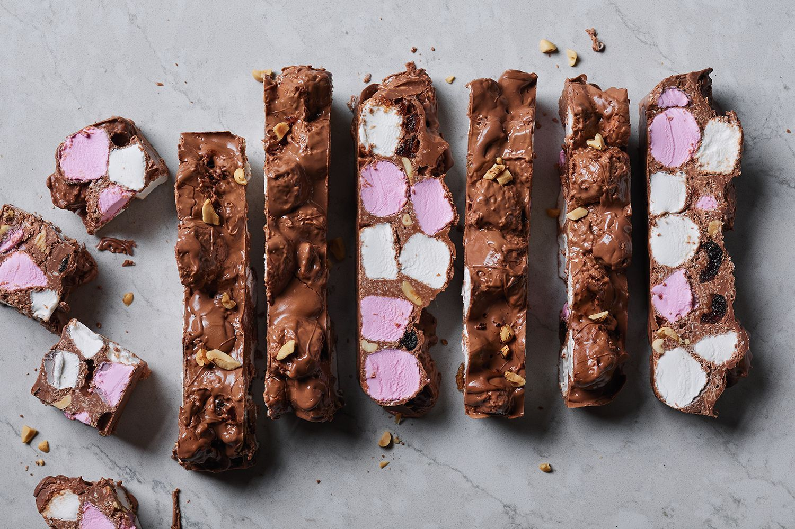

Rocky Road

Description
Rocky road is as simple as candy recipes get. Melt chocolate. Stir in add-ins of choice!
Ingredients
- 250g of both dark and milk chocolate
- 2 tbsp coconut oil
- 3 cups marshmallows
- 3/4 cup raspberry lollies
- 1/3 cup desiccated coconut
- 1/2 cup unsalted peanuts
Steps
- Line a 20cm square pan with baking paper
- Melt chocolate - Place chocolate and oil in a bowl and microwave until melted and smooth
- Stir in the add-ins then pour into pan, spreading out evenly
- Refrigerate for 3 hours or until fully cool
- Cut -Remove from the fridge 30min prior to cutting.